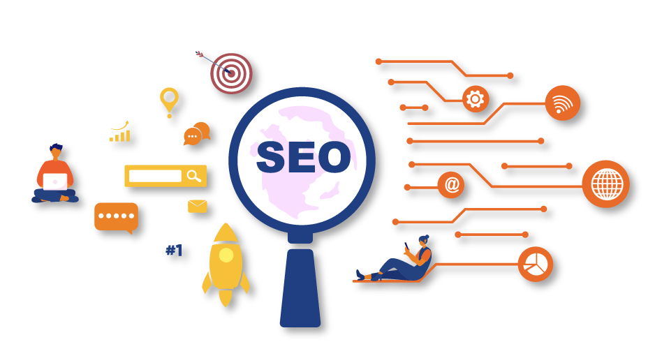

SEO - Search Engine Optimization
Conquistando o Topo dos Resultados de Busca
Conquistando o Topo dos Resultados de Busca
SEO, ou Search Engine Optimization, é o conjunto de técnicas e estratégias utilizadas para otimizar um site ou página web, visando melhorar sua visibilidade nos resultados de busca dos mecanismos como o Google. O objetivo é aumentar a relevância e autoridade do conteúdo, tornando-o mais atrativo para os motores de busca e, consequentemente, para os usuários. Isso é alcançado através de práticas como pesquisa de palavras-chave, criação de conteúdo de qualidade, otimização da estrutura do site, entre outras. O SEO é essencial para aumentar o tráfego orgânico, atrair um público qualificado e potencializar o sucesso online de um negócio ou site.
Os mecanismos de busca utilizam algoritmos complexos para determinar a relevância e qualidade de uma página em relação a uma determinada consulta de pesquisa. Esses algoritmos consideram uma série de fatores, incluindo a presença e relevância das palavras-chave, a qualidade do conteúdo, a autoridade do site e a experiência do usuário. As páginas são então classificadas com base nesses critérios e apresentadas nos resultados de busca de forma a oferecer aos usuários as informações mais relevantes e valiosas para sua consulta.
Otimizações On-Page referem-se às práticas de SEO que são implementadas diretamente no conteúdo e na estrutura de uma página web. Isso inclui a seleção e utilização estratégica de palavras-chave relevantes, a criação de conteúdo de alta qualidade e original, a otimização de títulos, meta descrições e cabeçalhos, a melhoria da velocidade de carregamento da página, a otimização de imagens e a criação de URLs amigáveis. Além disso, as otimizações on-page também envolvem a criação de uma boa experiência para o usuário, facilitando a navegação e tornando o conteúdo facilmente acessível e compreensível. Essas práticas visam não apenas melhorar o posicionamento nos resultados de busca, mas também proporcionar uma melhor experiência para os visitantes do site.